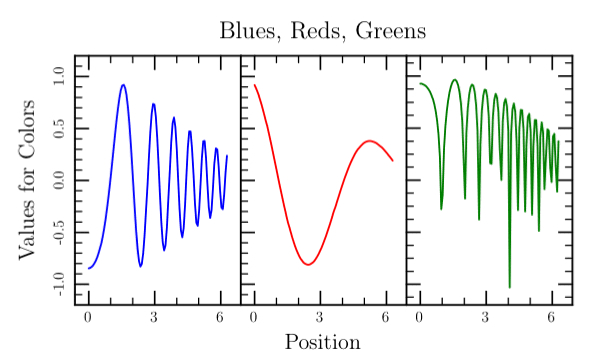

class Tioga::Page_Frame_Bounds
This section describes the coordinate systems used by tioga for page layout.
The “output page” is defined in “output coordinates” having units equal to 1/720 of an inch. This unit is 1/10 of a “big point” that is the basic size used in PostScript and PDF. By making the unit this size, we can write output coordinates to the PDF file as integers, getting a significant size reduction in the file without giving up noticable accuracy. The (0, 0) point of the output coordinate system is at the lower-left hand corner of the output page. The x axis increases horizontally, and the y axis increases vertically. The dimensions of the page are given by the attributes #page_width and page_height.
The attributes #page_right and #page_top are aliases for these. The attributes #page_left and #page_bottom are always zero. The default page size is 5 inches square, but you can set the size to anything you like using the #set_device_pagesize routine.
While the output coordinates have a fixed physical size, all the other coordinate systems are relative rather than absolute. At the next level comes “page coordinates” that are defined relative to the output page with (0, 0) in page coordinates at the lower left corner of the output page and (1, 1) at the upper right. Page coordinates are used to define the location of the current “frame”. The current frame location is held in the attributes #frame_left, #frame_right, #frame_top, and #frame_bottom, all in page coordinates. In addition, the attribute #frame_width is defined to be #frame_right - #frame_left, and #frame_height is #frame_top - frame_bottom. The defaults are (0.2, 0.2) for the lower left corner of the frame and (0.8, 0.8) for the upper right. You can change these by calling the routine set_frame_sides.
The “frame coordinates” are defined with (0, 0) at the lower left corner of the frame and (1, 1) at the upper right. Subframes are sized and located using frame coordinates. The routine #set_subframe does this job. In addition, subframes are used to give a desired aspect ratio. The routine set_aspect_ratio_relative_to_frame does this in terms of frame coordinates – in other words, it creates a subframe having the requested ratio of width to height relative to the frame. In some cases that will be what you want, but it is more common to want to specify the width to height ratio relative to the output page, i.e., in absolute rather than relative terms. This is provided by the routine set_physical_aspect_ratio (with set_aspect_ratio as an alias).
When doing a plot, you want yet another coordinate system, one that matches the data. This is called the “figure coordinate system” and is set by the “bounds” attributes that give the locations in figure coordinates of the edges of the frame. These attributes are called #bounds_right, #bounds_left, #bounds_top, and bounds_bottom. Note that you can “reverse” the x axis, for example, by making #bounds_right smaller than bounds_left. To help with the bookkeeping for this, the attribute #bounds_xmin holds the minimum of #bounds_left and #bounds_right, while #bounds_ymin has the minimum of #bounds_top and bounds_bottom. Finally, #bounds_width holds the absolute value of #bounds_right - #bounds_left and #bounds_height has abs(bounds_top - #bounds_bottom). The default bounds are 0 for left and bottom and 1 for right and top, making figure coordinates identical to frame coordinates. The bounds can be changed by calling the #set_bounds routine.
Public Instance Methods
The position of the bottom of the frame in the figure coordinate system. Initialized to 0.0 and changed by set_bounds.
# File lib/Tioga/Page_Frame_Bounds.rb, line 181 def bounds_bottom end
The height of the frame in figure coordinates. Initialized to 1.0 and changed by set_bounds.
# File lib/Tioga/Page_Frame_Bounds.rb, line 205 def bounds_height end
The position of the left of the frame in the figure coordinate system. Initialized to 0.0 and changed by set_bounds.
# File lib/Tioga/Page_Frame_Bounds.rb, line 165 def bounds_left end
The position of the right of the frame in the figure coordinate system. Initialized to 1.0 and changed by set_bounds.
# File lib/Tioga/Page_Frame_Bounds.rb, line 173 def bounds_right end
The position of the top of the frame in the figure coordinate system. Initialized to 1.0 and changed by set_bounds.
# File lib/Tioga/Page_Frame_Bounds.rb, line 189 def bounds_top end
The width of the frame in figure coordinates. Initialized to 1.0 and changed by set_bounds.
# File lib/Tioga/Page_Frame_Bounds.rb, line 197 def bounds_width end
The maximum x figure coordinate that is inside the frame. Initialized to 1.0 and changed by set_bounds.
# File lib/Tioga/Page_Frame_Bounds.rb, line 221 def bounds_xmax end
The minimum x figure coordinate that is inside the frame. Initialized to 0.0 and changed by set_bounds.
# File lib/Tioga/Page_Frame_Bounds.rb, line 213 def bounds_xmin end
The maximum y figure coordinate that is inside the frame. Initialized to 1.0 and changed by set_bounds.
# File lib/Tioga/Page_Frame_Bounds.rb, line 237 def bounds_ymax end
The minimum y figure coordinate that is inside the frame. Initialized to 0.0 and changed by set_bounds.
# File lib/Tioga/Page_Frame_Bounds.rb, line 229 def bounds_ymin end
Returns a dictionary with entries for 'left_margin' and 'right_margin' suitable for use with set_subframe. The margins are determined by the column specifications in the argument dict. The leftmost column is number 1 and the number of columns equals the column number for the rightmost column. The entries 'left_margin' and 'right_margin' determine the space outside the columns, and 'column_margin' is the space between columns, all given as fractions of the frame width. The space between the outer margins is divided to make room for 'num_columns' of equally wide columns. The returned margins bracket the requested 'column', or the requested range of columns from 'first_column' to 'last_column', inclusive. See also row_margins.
Dictionary Entries
'left_margin' => a_float # default is 0 'right_margin' => a_float # default is 0 'column_margin' => a_float # default is 0 'column' => an_integer 'first_column' => an_integer # default is 1 'last_column' => an_integer # default is 'first_column' 'num_columns' => an_integer # default is 'last_column'
Example
def columns t.set_aspect_ratio(2) t.rescale(0.8) t.do_box_labels( 'Blues, Reds, Greens', 'Position', 'Values for Colors') num_plots = 3 t.subplot(t.column_margins('num_columns' => 3, 'column' => 1)) do t.right_edge_type = AXIS_HIDDEN blues end t.subplot(t.column_margins('num_columns' => 3, 'column' => 2)) do t.yaxis_type = AXIS_WITH_TICKS_ONLY t.right_edge_type = AXIS_HIDDEN reds end t.subplot(t.column_margins('num_columns' => 3, 'column' => 3)) do t.yaxis_type = AXIS_WITH_TICKS_ONLY t.right_edge_type = AXIS_WITH_TICKS_ONLY greens end end

# File lib/Tioga/Page_Frame_Bounds.rb, line 310 def column_margins(dict) end
Convert the distance dx measured in figure x coordinates to the distance in frame x coordinates.
# File lib/Tioga/Page_Frame_Bounds.rb, line 475 def convert_figure_to_frame_dx(dx) end
Convert the distance dy measured in figure y coordinates to the distance in frame y coordinates.
# File lib/Tioga/Page_Frame_Bounds.rb, line 480 def convert_figure_to_frame_dy(dy) end
Convert the position x measured in figure x coordinates to the position in frame x coordinates.
# File lib/Tioga/Page_Frame_Bounds.rb, line 465 def convert_figure_to_frame_x(x) end
Convert the position y measured in figure y coordinates to the position in frame y coordinates.
# File lib/Tioga/Page_Frame_Bounds.rb, line 470 def convert_figure_to_frame_y(y) end
Convert the distance dx measured in figure x coordinates to the distance in output x coordinates.
# File lib/Tioga/Page_Frame_Bounds.rb, line 515 def convert_figure_to_output_dx(dx) end
Convert the distance dy measured in figure y coordinates to the distance in output y coordinates.
# File lib/Tioga/Page_Frame_Bounds.rb, line 520 def convert_figure_to_output_dy(dy) end
Convert the position x measured in figure x coordinates to the position in output x coordinates.
# File lib/Tioga/Page_Frame_Bounds.rb, line 505 def convert_figure_to_output_x(x) end
Convert the position y measured in figure y coordinates to the position in output y coordinates.
# File lib/Tioga/Page_Frame_Bounds.rb, line 510 def convert_figure_to_output_y(y) end
Convert the distance dx measured in frame x coordinates to the distance in figure x coordinates.
# File lib/Tioga/Page_Frame_Bounds.rb, line 495 def convert_frame_to_figure_dx(dx) end
Convert the distance dy measured in frame y coordinates to the distance in figure y coordinates.
# File lib/Tioga/Page_Frame_Bounds.rb, line 500 def convert_frame_to_figure_dy(dy) end
Convert the position x measured in frame x coordinates to the position in figure x coordinates.
# File lib/Tioga/Page_Frame_Bounds.rb, line 485 def convert_frame_to_figure_x(x) end
Convert the position y measured in frame y coordinates to the position in figure y coordinates.
# File lib/Tioga/Page_Frame_Bounds.rb, line 490 def convert_frame_to_figure_y(y) end
Convert the distance dx measured in frame x coordinates to the distance in page x coordinates.
# File lib/Tioga/Page_Frame_Bounds.rb, line 455 def convert_frame_to_page_dx(dx) end
Convert the distance dy measured in frame y coordinates to the distance in page y coordinates.
# File lib/Tioga/Page_Frame_Bounds.rb, line 460 def convert_frame_to_page_dy(dy) end
Convert the position x measured in frame x coordinates to the position in page x coordinates.
# File lib/Tioga/Page_Frame_Bounds.rb, line 445 def convert_frame_to_page_x(x) end
Convert the position y measured in frame y coordinates to the position in page y coordinates.
# File lib/Tioga/Page_Frame_Bounds.rb, line 450 def convert_frame_to_page_y(y) end
Convert the distance d measured in inches to output coordinates.
# File lib/Tioga/Page_Frame_Bounds.rb, line 378 def convert_inches_to_output(d) end
Convert the distance d measured in millimeters to output coordinates.
# File lib/Tioga/Page_Frame_Bounds.rb, line 370 def convert_mm_to_output(d) end
Convert the distance dx measured in output x coordinates to the distance in figure x coordinates.
# File lib/Tioga/Page_Frame_Bounds.rb, line 535 def convert_output_to_figure_dx(dx) end
Convert the distance dy measured in output y coordinates to the distance in figure y coordinates.
# File lib/Tioga/Page_Frame_Bounds.rb, line 540 def convert_output_to_figure_dy(dy) end
Convert the position x measured in output x coordinates to the position in figure x coordinates.
# File lib/Tioga/Page_Frame_Bounds.rb, line 525 def convert_output_to_figure_x(x) end
Convert the position y measured in output y coordinates to the position in figure y coordinates.
# File lib/Tioga/Page_Frame_Bounds.rb, line 530 def convert_output_to_figure_y(y) end
Convert the distance d measured in output coordinates to inches.
# File lib/Tioga/Page_Frame_Bounds.rb, line 374 def convert_output_to_inches(d) end
Convert the distance d measured in output coordinates to millimeters.
# File lib/Tioga/Page_Frame_Bounds.rb, line 366 def convert_output_to_mm(d) end
Convert the distance dx measured in output x coordinates to the distance in page x coordinates.
# File lib/Tioga/Page_Frame_Bounds.rb, line 415 def convert_output_to_page_dx(dx) end
Convert the distance dy measured in output y coordinates to the same distance in page y coordinates.
# File lib/Tioga/Page_Frame_Bounds.rb, line 420 def convert_output_to_page_dy(dy) end
Convert the position x measured in output x coordinates to the position in page x coordinates.
# File lib/Tioga/Page_Frame_Bounds.rb, line 405 def convert_output_to_page_x(x) end
Convert the position y measured in output y coordinates to the position in page y coordinates.
# File lib/Tioga/Page_Frame_Bounds.rb, line 410 def convert_output_to_page_y(y) end
Convert the distance dx measured in page x coordinates to the distance in frame x coordinates.
# File lib/Tioga/Page_Frame_Bounds.rb, line 435 def convert_page_to_frame_dx(dx) end
Convert the distance dy measured in page y coordinates to the distance in frame y coordinates.
# File lib/Tioga/Page_Frame_Bounds.rb, line 440 def convert_page_to_frame_dy(dy) end
Convert the position x measured in page x coordinates to the position in frame x coordinates.
# File lib/Tioga/Page_Frame_Bounds.rb, line 425 def convert_page_to_frame_x(x) end
Convert the position y measured in page y coordinates to the position in frame y coordinates.
# File lib/Tioga/Page_Frame_Bounds.rb, line 430 def convert_page_to_frame_y(y) end
Convert the distance dx measured in page x coordinates to the distance in output x coordinates.
# File lib/Tioga/Page_Frame_Bounds.rb, line 395 def convert_page_to_output_dx(dx) end
Convert the distance dy measured in page y coordinates to the distance in output y coordinates.
# File lib/Tioga/Page_Frame_Bounds.rb, line 400 def convert_page_to_output_dy(dy) end
Convert the position x measured in page x coordinates to the position in output x coordinates.
# File lib/Tioga/Page_Frame_Bounds.rb, line 384 def convert_page_to_output_x(x) end
Convert the position y measured in page y coordinates to the position in output y coordinates.
# File lib/Tioga/Page_Frame_Bounds.rb, line 390 def convert_page_to_output_y(y) end
Returns the angle measured in degrees clockwise from the horizontal for the slope specified by dx and dy given in figure coordinates.
# File lib/Tioga/Page_Frame_Bounds.rb, line 545 def convert_to_degrees(dx, dy) end
The position of the bottom of the frame in the page y coordinate system which runs from 0 at the bottom to 1 at the top. Initialized to 0.2 and changed by set_subframe.
# File lib/Tioga/Page_Frame_Bounds.rb, line 133 def frame_bottom end
The height of the frame in page coordinates. Initialized to 0.6 and changed by set_subframe.
# File lib/Tioga/Page_Frame_Bounds.rb, line 157 def frame_height end
The position of the left of the frame in the page x coordinate system which runs from 0 at the left to 1 at the right. Initialized to 0.2 and changed by set_subframe.
# File lib/Tioga/Page_Frame_Bounds.rb, line 117 def frame_left end
The position of the right of the frame in the page x coordinate system which runs from 0 at the left to 1 at the right. Initialized to 0.8 and changed by set_subframe.
# File lib/Tioga/Page_Frame_Bounds.rb, line 125 def frame_right end
The position of the top of the frame in the page y coordinate system which runs from 0 at the bottom to 1 at the top. Initialized to 0.8 and changed by set_subframe.
# File lib/Tioga/Page_Frame_Bounds.rb, line 141 def frame_top end
The width of the frame in page coordinates. Initialized to 0.6 and changed by set_subframe.
# File lib/Tioga/Page_Frame_Bounds.rb, line 149 def frame_width end
The position of the bottom of the page in the device coordinate system – measured in output page coordinates (1/720 inch).
# File lib/Tioga/Page_Frame_Bounds.rb, line 80 def page_bottom end
The height of the page in the device coordinate system – measured in output page coordinates (1/720 inch).
# File lib/Tioga/Page_Frame_Bounds.rb, line 101 def page_height end
The position of the left of the page in the device coordinate system – measured in output page coordinates (1/720 inch).
# File lib/Tioga/Page_Frame_Bounds.rb, line 66 def page_left end
The position of the right of the page in the device coordinate system – measured in output page coordinates (1/720 inch).
# File lib/Tioga/Page_Frame_Bounds.rb, line 73 def page_right end
The position of the top of the page in the device coordinate system – measured in output page coordinates (1/720 inch).
# File lib/Tioga/Page_Frame_Bounds.rb, line 87 def page_top end
The width of the page in the device coordinate system – measured in output page coordinates (1/720 inch).
# File lib/Tioga/Page_Frame_Bounds.rb, line 94 def page_width end
Returns a dictionary with entries for 'top_margin' and 'bottom_margin' suitable for use with set_subframe. The margins are determined by the row specifications in the argument dict. The uppermost row is number 1 and the number of rows equals the row number for the bottom-most row. The entries 'top_margin' and 'bottom_margin' determine the space above and below the rows, and 'row_margin' is the space between rows, all given as fractions of the frame height. The space between the outer margins is divided to make room for 'num_rows' of equally tall rows. The returned margins bracket the requested 'row', or the requested range of rows from 'first_row' to 'last_row', inclusive. See also column_margins.
Dictionary Entries
'top_margin' => a_float # default is 0 'bottom_margin' => a_float # default is 0 'row_margin' => a_float # default is 0 'row' => an_integer 'first_row' => an_integer # default is 1 'last_row' => an_integer # default is 'first_row' 'num_rows' => an_integer # default is 'last_row'
# File lib/Tioga/Page_Frame_Bounds.rb, line 332 def row_margins(dict) end
Sets the bounds according to the entries in the dictionary argument (called by show_plot).
The values of the entries are the figure coordinates for the edges of the frame. The following attributes are changed: #bounds_left, #bounds_right, #bounds_bottom, #bounds_top, xaxis_reversed, #bounds_xmin, #bounds_xmax, #bounds_width, yaxis_reversed, #bounds_ymin, #bounds_ymax, #bounds_height, default_text_height_dx, and default_text_height_dy.
Dictionary Entries
'bounds_left' => a_float # required 'bounds_right' => a_float # required 'bounds_top' => a_float # required 'bounds_bottom' => a_float # required 'left_boundary' # alias for 'bounds_left' 'right_boundary' # alias for 'bounds_right' 'top_boundary' # alias for 'bounds_top' 'bottom_boundary' # alias for 'bounds_bottom'
The following forms are also supported for calls to #set_bounds:
set_bounds('boundaries' => [ left, right, top, bottom ]) set_bounds([ left, right, top, bottom ])
# File lib/Tioga/Page_Frame_Bounds.rb, line 360 def set_bounds(dict=nil) end
The page coordinates go from 0.0 to 1.0 with (0,0) at the lower left and (1,1) at the upper right. This command sets the physical size of this rectangle in the output coordinate
# File lib/Tioga/Page_Frame_Bounds.rb, line 59 def set_device_pagesize(width, height) end
This command sets #frame_left, #frame_right, #frame_top, and #frame_bottom to the given values.
# File lib/Tioga/Page_Frame_Bounds.rb, line 109 def set_frame_sides(left, right, top, bottom) end
Adjusts frame margins according to the entries in the dictionary argument.
Note that this does not automatically adjust the clipping rectangle to the new frame. If you want the clipping changed, call clip_to_frame after calling set_subframe.
Dictionary Entries
'left_margin' => a_float # optional 'right_margin' => a_float # optional 'top_margin' => a_float # optional 'bottom_margin' => a_float # optional 'left' # alias for 'left_margin' 'right' # alias for 'right_margin' 'top' # alias for 'top_margin' 'bottom' # alias for 'bottom_margin'
The following forms are also supported for calls to #set_subframe:
set_subframe('margins' => [ left, right, top, bottom ]) set_subframe([ left, right, top, bottom ])
# File lib/Tioga/Page_Frame_Bounds.rb, line 261 def set_subframe(dict=nil) end
This string will be used as the “preamble” for the TeX file. The default does “usepackage” commands for “color” and “geometry”. You may want to use some other packages as well. Here's an example of how to do it which adds the 'marvosym' package by inserting the following line into the 'initialize' routine.
t.tex_preamble = t.tex_preamble + "\n\t\\usepackage{marvosym}\n"
# File lib/Tioga/Page_Frame_Bounds.rb, line 562 def tex_preamble end